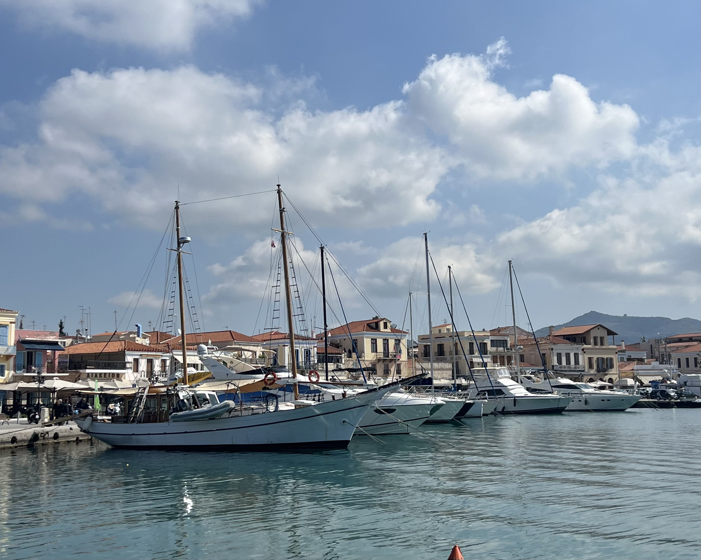
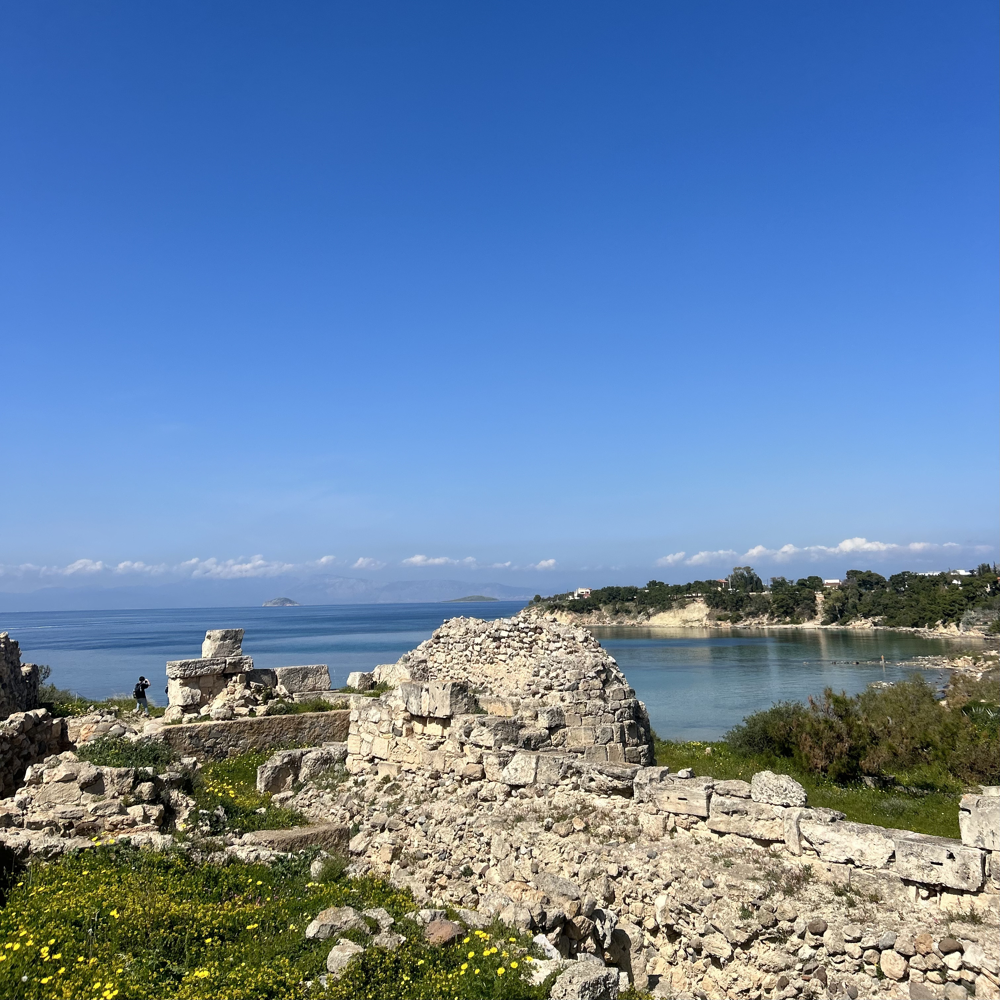
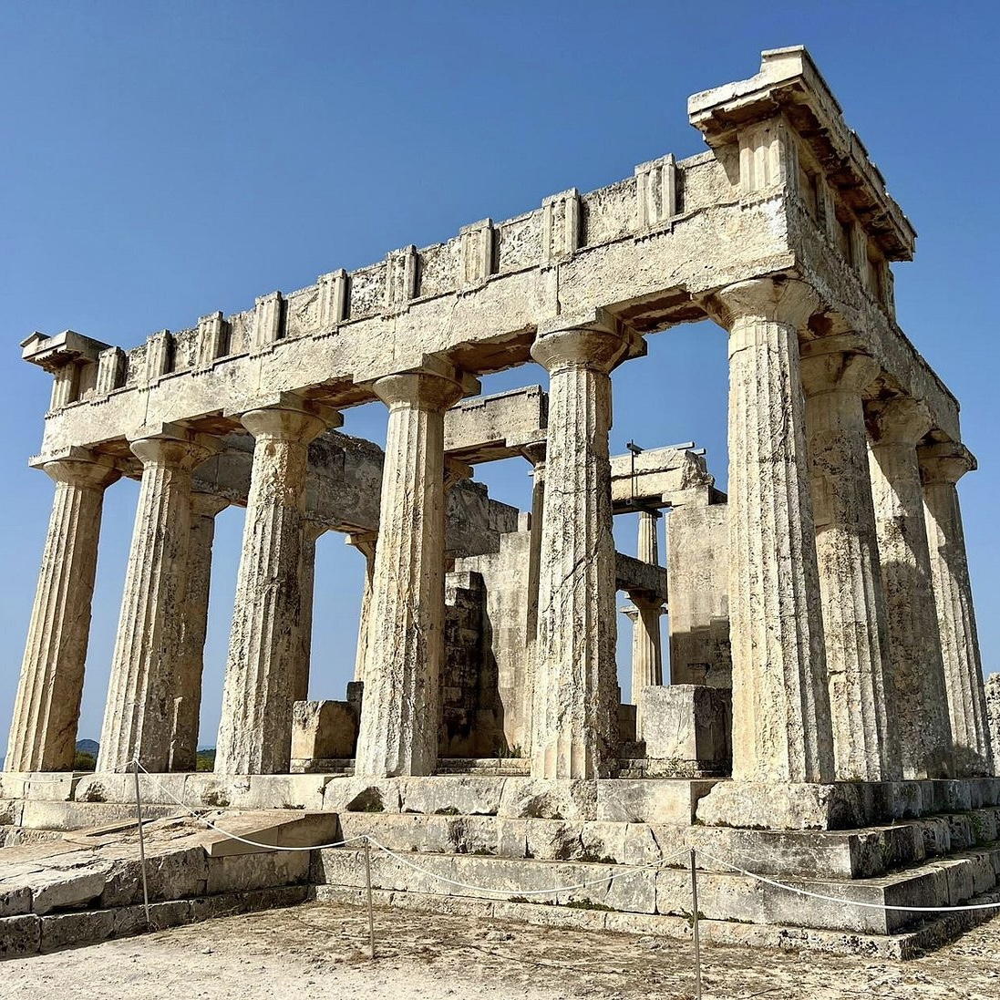

From Pistachios to Temples.

3-4 hours
Private Tour
Custom pick-up point




Embark on a full-day exploration of Aegina, a gem of the Saronic Gulf just a short ferry ride from Piraeus. Known for its pistachio groves, neoclassical charm, and rich mythology, Aegina offers the perfect escape into Greek island culture and history.
Upon arrival, you’ll visit one of Greece’s most impressive ancient landmarks—the Temple of Athena Aphaia. Majestically perched on a pine-covered hill, this Doric temple dates back to around 500 BC and offers stunning views of the sea. With its well-preserved structure and tranquil surroundings, the site provides a glimpse into the spiritual and artistic achievements of ancient Greece.
The tour continues with a visit to the Monastery of Saint Nectarios, one of the most important Christian pilgrimage sites in the country. Built in the early 20th century and dedicated to one of Greece’s most beloved modern saints, the monastery features a grand basilica, peaceful courtyards, and the relics of Saint Nectarios himself.
Back in Aegina Town, enjoy a leisurely lunch at a seaside taverna, where you can savor fresh seafood, mezedes, and traditional Greek dishes while soaking in the relaxed island atmosphere.
In the afternoon, wander through the Old Harbor to admire the Venetian-style Castle of Markellos and sample Aegina’s world-famous pistachios—an island specialty celebrated for their unique flavor and quality.
Begin your day with a scenic ferry ride from Piraeus, gliding over the sparkling Saronic Gulf.
Arrive at the central port of Spetses, lined with cafés, boutique shops, and historic cannons.
Visit the mansion of Laskarina Bouboulina, a naval commander during the Greek War of Independence.
Explore this historic mansion, now a National Historical Museum showcasing Spetses' rich heritage.
Visit the spiritual heart of Spetses, where the revolutionary flag was first raised in 1821.
Enjoy a leisurely lunch at a waterfront taverna, surrounded by traditional fishing boats and modern yachts.
Conclude your tour with a walk around the lighthouse, admiring bronze statues by Natalia Mela.
Entrance fees to venues
Private licensed guide
If you have any questions or would like to book this tour, feel free to reach out:
Email: elisavetmakri@hotmail.com
Phone: +30 69429190805